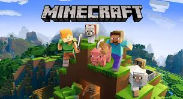
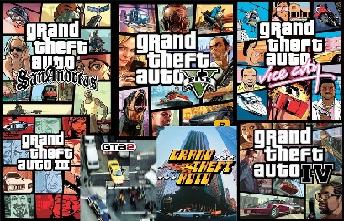
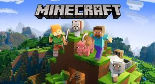
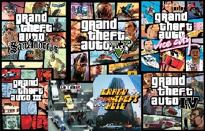

My Interest in Computers During my Youth
As I grew up, my interest in video games has been very early in my life. I was born in Morocco, and my parents used to bring me in a game center. So, I started playing video games from a very young age from open worlds like Minecraft to flash games on the web. However, it was one time when I was playing Sonic Generations at 7 when I was thinking: how is it made? Is in a conditional video? or even conditional images? That's when my journey towards programming and game development started. Even though some think it's more difficult, my favorite types of games( both in the dev side and play side) are 3D games with a lot of interactive tools. For this summer, I aim to find an internship in a software related field but it would be the dream to work for a game company.
My Favorite Video Games

 


